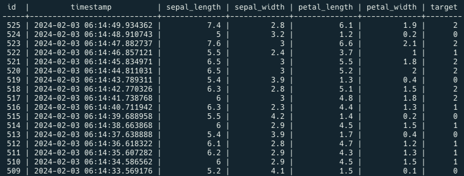

MLOps for MLE - 5
mlops
DB에서 데이터를 가져오기
Summary
DB에서 데이터를 가져오는 파이프라인 작성
이를 활용한 모델 스크립트 작성
Note
실습을 진행했던 코드를 보고싶으시다면 여기를 눌러주세요
실습
1. Load Data
데이터를 추출하는 쿼리문
SELECT * FROM iris_data ORDER BY id DESC LIMIT 100;
-> id column 을 기준으로 최신 데이터 100개를 추출하는 쿼리
Pandas를 이용한 데이터 받아오기
pandas.read_sql 은 입력 argument 로 query 와 DB connector 를 받음
import pandas as pd
import psycopg2
db_connect = psycopg2.connect(host="localhost", database="mydatabase", user="myuser", password="mypassword")
df = pd.read_sql("SELECT * FROM iris_data ORDER BY id DESC LIMIT 100", db_connect)-> 확인해보면 df 에 데이터가 쌓여있음
모델 학습에 필요한 X와 y를 정의
from sklearn.model_selection import train_test_split
X = df.drop(["id", "timestamp", "target"], axis="columns")
y = df["target"]
X_train, X_valid, y_train, y_valid = train_test_split(X, y, train_size=0.8, random_state=2022)2. Save Data
DB에 계속 데이터가 쌓이고 있으므로 데이터를 불러올 때마다 데이터가 변경됨. 따라서 Validation 용 데이터를 위해 따로 저장이 필요함
df.to_csv("valid_data.csv", index=False)3. 전체 코드
Train
import joblib
import pandas as pd
import psycopg2
from sklearn.metrics import accuracy_score
from sklearn.model_selection import train_test_split
from sklearn.preprocessing import StandardScaler
from sklearn.pipeline import Pipeline
from sklearn.svm import SVC
# 1. get data
db_connect = psycopg2.connect(host="localhost", database="mydatabase", user="myuser", password="mypassword")
df = pd.read_sql("SELECT * FROM iris_data ORDER BY id DESC LIMIT 100", db_connect)
X = df.drop(["id", "timestamp", "target"], axis="columns")
y = df["target"]
X_train, X_valid, y_train, y_valid = train_test_split(X, y, train_size=0.8, random_state=2022)
# 2. model development and train
model_pipeline = Pipeline([("scaler", StandardScaler()), ("svc", SVC())])
model_pipeline.fit(X_train, y_train)
train_pred = model_pipeline.predict(X_train)
valid_pred = model_pipeline.predict(X_valid)
train_acc = accuracy_score(y_true=y_train, y_pred=train_pred)
valid_acc = accuracy_score(y_true=y_valid, y_pred=valid_pred)
print("Train Accuracy :", train_acc)
print("Valid Accuracy :", valid_acc)
# 3. save model
joblib.dump(model_pipeline, "db_pipeline.joblib")
# 4. save data
df.to_csv("data.csv", index=False)Validation
import joblib
import pandas as pd
from sklearn.metrics import accuracy_score
from sklearn.model_selection import train_test_split
# 1. reproduce data
df = pd.read_csv("data.csv")
X = df.drop(["id", "timestamp", "target"], axis="columns")
y = df["target"]
X_train, X_valid, y_train, y_valid = train_test_split(X, y, train_size=0.8, random_state=2022)
# 2. load model
pipeline_load = joblib.load("db_pipeline.joblib")
# 3. validate
load_train_pred = pipeline_load.predict(X_train)
load_valid_pred = pipeline_load.predict(X_valid)
load_train_acc = accuracy_score(y_true=y_train, y_pred=load_train_pred)
load_valid_acc = accuracy_score(y_true=y_valid, y_pred=load_valid_pred)
print("Load Model Train Accuracy :", load_train_acc)
print("Load Model Valid Accuracy :", load_valid_acc)